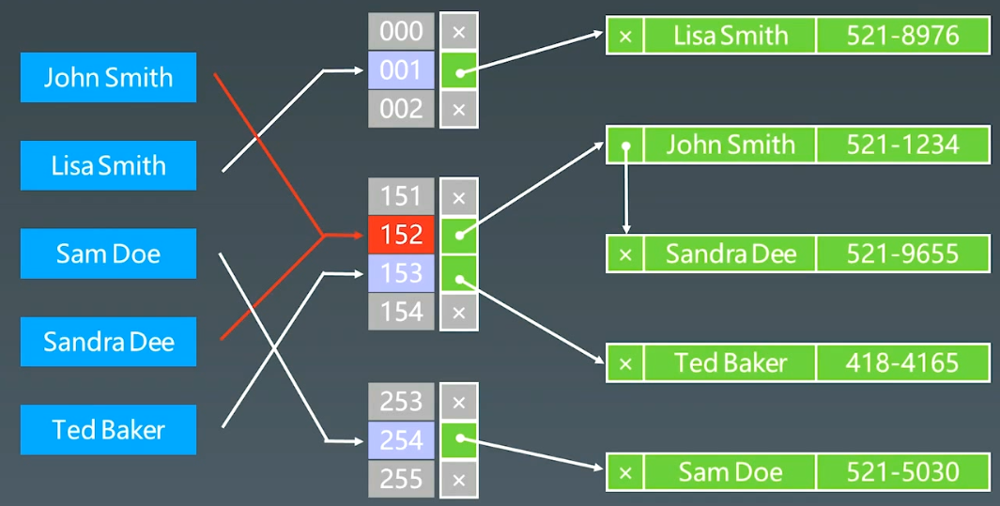
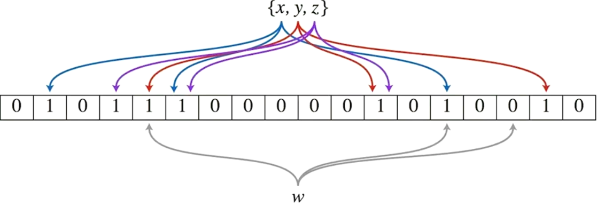
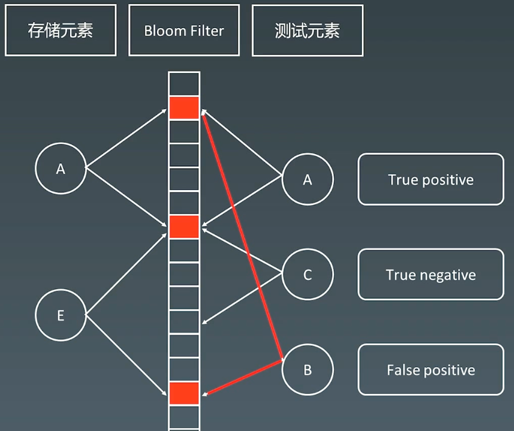
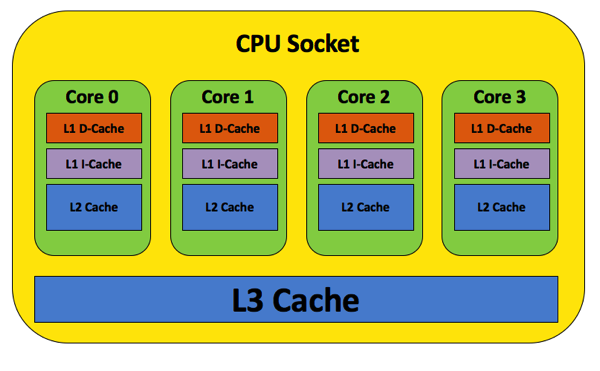
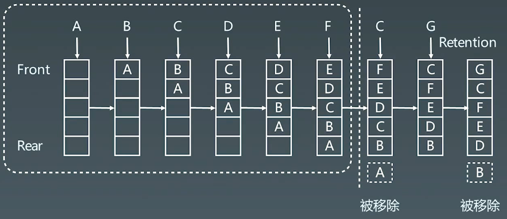
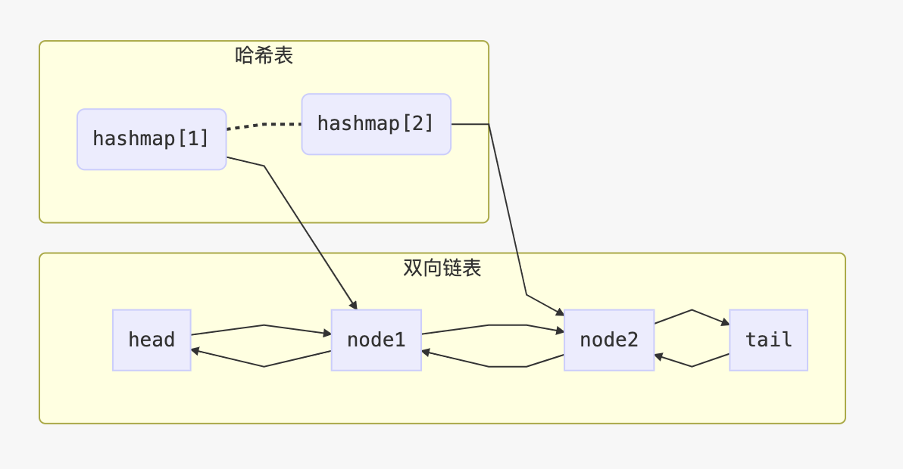

17 布隆过滤器和LRU缓存
|Word count:1.3k|Reading time:5min|Post View:
1.布隆过滤器（Bloom Filter）
1.1 HashTable + 拉链存储重复元素

实际应用时，更多需要存储 有还是没有，hashtable中存储有大量信息，比较占内存
1.2 Bloom Filter
一个很长的二进制向量和一系列随机映射函数。布隆过滤器可以用于检索一个元素是否在一个集合中。
优点是空间效率和查询时间都远远超过一般的算法
缺点是有一定的误识别率和删除困难

插入AE元素，当测试B元素时，发现映射的二进制位为1，出现误识别；
- 当元素对应的二进制位为1时，此元素可能存在在布隆过滤器中；
- 当元素对应的二进制位有一个为0时，此元素不可能在布隆过滤器中；

布隆过滤器一般放在外面当一个缓存使用，做一个快速的判断；当B在布隆过滤器中查询到，会到DB中去查找数据。
1.3 案例
- 比特币
- 分布式系统（Map-Reduce） - Hadoop、search engin
- Redis缓存
- 垃圾邮件、评论过滤
1.4 实现
python实现
1
2
3
4
5
6
7
8
9
10
11
12
13
14
15
16
17
18
19
20
21
22
23
24
25
26
27
28
| from bitarray import bitarray
import mmh3
class BloomFilter:
def __init__(self, size, hash_num):
self.size = size
self.hash_num = hash_num
self.bit_array = bitarray(size)
self.bit_array.setall(0)
def add(self, s):
for seed in range(self.hash_num):
result = mmh3.hash(s, seed) % self.size
self.bit_array[result] = 1
def lookup(self, s):
for seed in range(self.hash_num):
result = mmh3.hash(s, seed) % self.size
if self.bit_array[result] == 0:
return "None"
return "Probably"
bf = BloomFilter(500000, 7)
bf.add("12345")
print(bf.lookup("12345"))
print(bf.lookup("123456"))
|
2.LRU cache
2.1 Cache缓存
cpu socket

2.2 LRU Cache
- 两个要素：大小、替换策略
- Hash Table + Double Linklist
O(1)查询O(1)修改、更新

2.2 替换策略
- 替换算法总揽
- LFU - least frequently used
- LRU - least recently used
2.3 实战题目
（1）LRU缓存
146. LRU 缓存 - 力扣（LeetCode）
1
2
3
4
5
6
| 请你设计并实现一个满足 LRU (最近最少使用) 缓存 约束的数据结构。
实现 LRUCache 类：
- LRUCache(int capacity) 以 正整数 作为容量 capacity 初始化 LRU 缓存
- int get(int key) 如果关键字 key 存在于缓存中，则返回关键字的值，否则返回 -1 。
- void put(int key, int value) 如果关键字 key 已经存在，则变更其数据值 value ；如果不存在，则向缓存中插入该组 key-value 。如果插入操作导致关键字数量超过 capacity ，则应该 逐出 最久未使用的关键字。
函数 get 和 put 必须以 O(1) 的平均时间复杂度运行。
|

1
2
3
4
5
6
7
8
9
10
11
12
13
14
15
16
17
18
19
20
21
22
23
24
25
26
27
28
29
30
31
32
33
34
35
36
37
38
39
40
41
42
43
44
45
46
47
48
49
50
51
52
53
54
55
56
57
58
59
60
61
62
63
64
65
66
67
68
| class LRUCache {
public:
using Pair = std::pair<int, int>;
using List = std::list<Pair>;
using Map = std::unordered_map<int, typename List::iterator>;
LRUCache(int capacity) {
m_capacity = capacity;
}
int get(int key) {
typename Map::iterator map_itor = m_map.find(key);
if (map_itor == m_map.end())
return -1;
typename List::iterator list_itor = map_itor->second;
std::pair<int, int> list_pair = std::make_pair(list_itor->first, list_itor->second);
m_list.erase(list_itor);
m_list.push_front(list_pair);
m_map[key] = m_list.begin();
return list_pair.second;
}
void put(int key, int value) {
typename Map::iterator itor = m_map.find(key);
if (itor != m_map.end())
{
m_list.erase(itor->second);
m_map.erase(itor);
}
m_list.push_front(std::make_pair(key, value));
m_map[key] = m_list.begin();
if (m_list.size() > m_capacity)
{
int end_key = m_list.back().first;
m_list.pop_back();
m_map.erase(end_key);
}
}
private:
int m_capacity;
List m_list;
Map m_map;
};
|
1
2
3
4
5
6
7
8
9
10
11
12
13
14
15
16
17
18
19
20
21
22
23
24
25
26
27
28
29
30
31
32
33
34
35
36
37
38
39
40
41
42
43
44
45
46
47
48
49
50
51
52
53
54
55
56
57
58
59
60
61
62
63
64
65
66
67
68
| class DLinkedNode:
def __init__(self, key=0, value=0):
self.key = key
self.value = value
self.prev = None
self.next = None
class LRUCache:
def __init__(self, capacity: int):
self.cache = dict()
self.head = DLinkedNode()
self.tail = DLinkedNode()
self.head.next = self.tail
self.tail.prev = self.head
self.capacity = capacity
self.size = 0
def get(self, key: int) -> int:
if key not in self.cache:
return -1
node = self.cache[key]
self.moveToHead(node)
return node.value
def put(self, key: int, value: int) -> None:
if key not in self.cache:
node = DLinkedNode(key, value)
self.cache[key] = node
self.addToHead(node)
self.size += 1
if self.size > self.capacity:
removed = self.removeTail()
self.cache.pop(removed.key)
self.size -= 1
else:
node = self.cache[key]
node.value = value
self.moveToHead(node)
def addToHead(self, node):
node.prev = self.head
node.next = self.head.next
self.head.next.prev = node
self.head.next = node
def removeNode(self, node):
node.prev.next = node.next
node.next.prev = node.prev
def moveToHead(self, node):
self.removeNode(node)
self.addToHead(node)
def removeTail(self):
node = self.tail.prev
self.removeNode(node)
return node
|